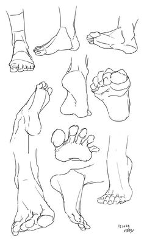

Página Principal
Aqui você irá aprender técnicas de desenho.
Início
Para começar a desenhar e aprimorar suas habilidades, siga estas dicas:
1. Materiais Básicos
Escolher os materiais certos é essencial para o desenho. Aqui estão os itens recomendados:
- Papel: Use papel de boa qualidade, como papel para desenho, que evita borrões e permite um acabamento suave.
- Lápis: Comece com um conjunto de lápis de diferentes durezas (H para linhas finas e B para sombreamento).
- Borracha: Utilize uma borracha macia para correção e uma borracha em forma de lápis para detalhes.
2. Técnicas de Desenho
Praticar técnicas básicas pode melhorar muito seu desenho:
- Traços Básicos: Pratique linhas retas e curvas para melhorar o controle do lápis.
- Sombreamento: Aprenda a criar profundidade usando diferentes técnicas de sombreamento, como hachuras e esfumaçado.
- Perspectiva: Entenda a perspectiva para desenhar objetos e cenários com profundidade e realismo.
3. Desenhando Partes do Corpo
Para desenhar o corpo humano, é importante conhecer as proporções e técnicas específicas:
Cabeça e Rosto
Comece desenhando a cabeça como uma forma oval. Adicione linhas guias para os olhos, nariz e boca, e pratique diferentes expressões faciais.
Corpo e Proporções
Estude as proporções do corpo humano. Geralmente, a altura do corpo pode ser dividida em 8 cabeças para uma proporção ideal.
Braços e Mãos
Desenhe os braços como cilindros e adicione detalhes como articulações e músculos. Pratique desenhar as mãos em diferentes posições.
Pernas e Pés
Desenhe as pernas com uma forma tubular e adicione detalhes para os músculos. Os pés devem ser desenhados com cuidado para representar corretamente a perspectiva e o ângulo.
Sobre
Este site foi criado para ajudar pessoas a aprender e aprimorar suas habilidades de desenho. Nosso objetivo é fornecer recursos e técnicas para que você possa se desenvolver artisticamente e alcançar seus objetivos criativos.
Com uma variedade de tutoriais e dicas, esperamos tornar o processo de aprendizagem mais acessível e eficiente para todos, independentemente do nível de habilidade.
Contato
Se você tiver alguma duvida entre em contato e-mail: mairaveiga2018@gmail.com